2026.03 — 2026.06
软通动力信息技术服务有限公司（字节跳动外包）
围绕手机 Agent 的 GUI/MCP 规则、真机多轮评测与 RL 数据质量，重构协同规则，维护标注与质检 SOP，搭建九节点自动化质检工作流，并把人机分歧样本回流到 Prompt、字段映射和处置规则。
最终交付2000+ 条 RL 训练数据
内部抽检合格率 97.5%
人工仍在环25 条 → 37 条 / 日
把复杂业务问题，转成可验证的 AI 产品与应用交付。
我关注产品判断、用户流程、PRD / 原型、Agent / RAG 应用与评测闭环；用可查看的 Demo、Replay、Artifact 与边界说明，让方案不仅“看起来能做”，而是能够被复查、被验证、被继续推进。
这个网站是我的个人工作台：这里有项目，也有我如何判断问题、组织证据、做出取舍和继续学习的轨迹。
我从内容与业务场景出发，逐步走向 AI 产品定义、应用交付与质量闭环。我喜欢把模糊需求拆成用户流程、可运行原型、评测标准和下一步决策。
工作经历承担“我在什么场景里做过什么”的证明，个人项目承担“我能把它继续做深”的证明；两者不混写。
围绕手机 Agent 的 GUI/MCP 规则、真机多轮评测与 RL 数据质量，重构协同规则，维护标注与质检 SOP，搭建九节点自动化质检工作流，并把人机分歧样本回流到 Prompt、字段映射和处置规则。
参与从 0 到 1 设计内部跨境电商运营 Agent、RAG 知识助手和 Listing 多平台适配工具；把运营 SOP 拆成任务链、工具调用、规则检查和人工确认，让 AI 输出能进入业务流程而不是停在聊天里。
从用户评论、内容结构和 CTR / CVR 数据中提炼问题，沉淀内容 SOP，并通过 A/B 测试持续迭代选题和转化路径。这段经历构成了我现在做产品需求与用户洞察的业务底色。
作品集是这份个人网站的主轴，但不是全部身份。每个案例按 Problem → Decision → Artifact → Evidence → Boundary 展开，图片与录屏只作为可复查的证据，不替代个人贡献说明。
把产品方案形成过程做成可查看的五角色交接、返工与导出链路；公开入口为流程回放，不暗示在线模型调用或多人生产系统。
AI 产品从想法走向原型时，需求、研究和产品方案容易混在一次对话里，产物难以分步审阅与修改。
独立定义需求、研究、产品、原型和评审五角色；前序产物传递到下一阶段，并在入口和评审处保留人工 Gate。
本地可运行工作台、结构化阶段产物、沙箱 HTML 原型、运行记录与导出链路。
公开 Replay 可查看五角色交接、返工与导出；本地记录曾跑通模型 API 与 Hermes Web 检索全链路。
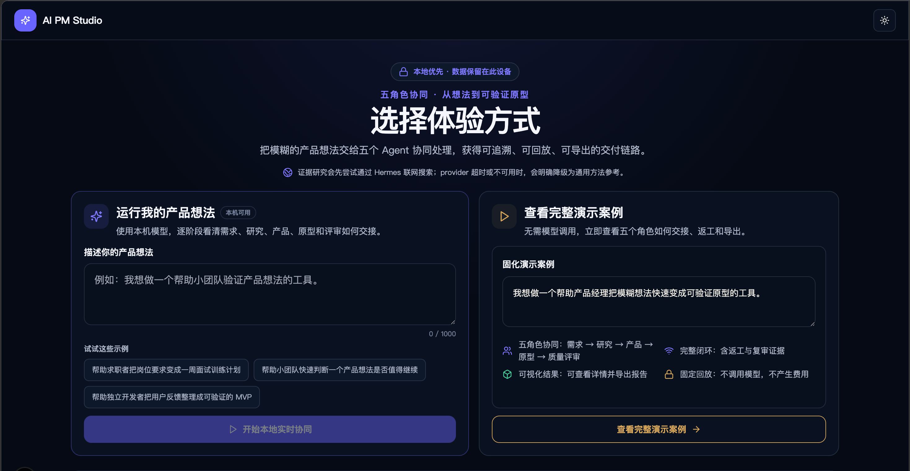
把自动化质检链路做成可浏览的流程看板，并保留 Coze 工作流开发页作为实现侧证据；当前仅呈现演示与开发入口，不外推为生产部署。
RL 数据存在图文不一致、步骤判定分歧等问题，质检规则和判断链需要从人工 SOP 变成可复查的工作流。
确定性字段交给代码规则，截图状态交给 VLM，任务目标与轨迹的一致性由 LLM 辅助判断，最终保留完整人工复核。
直接贡献是规则拆解、九节点工作流搭建、Prompt/字段映射和人机分歧样本迭代；模型训练与项目整体结果由团队共同完成。
交付 2000+ 条 RL 训练数据；内部抽检合格率 97.5%，机器预检与人工最终判定一致率 90%，单人日均质检产能 25 条提升至 37 条，仍保留人工复核。
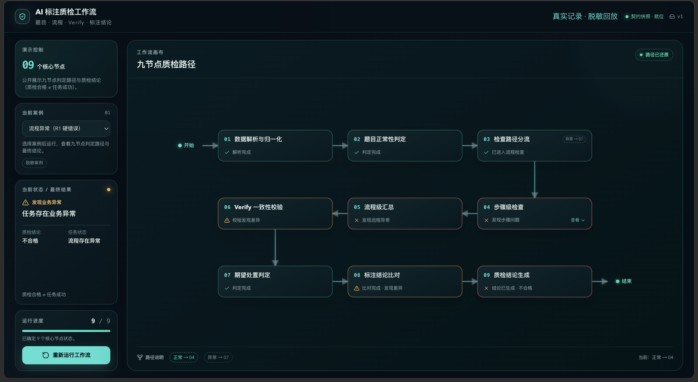
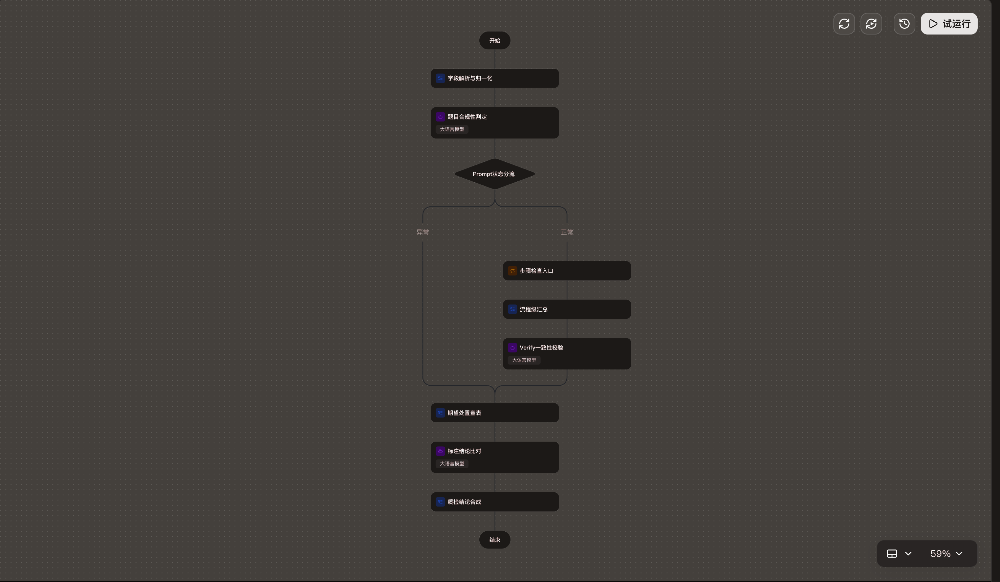
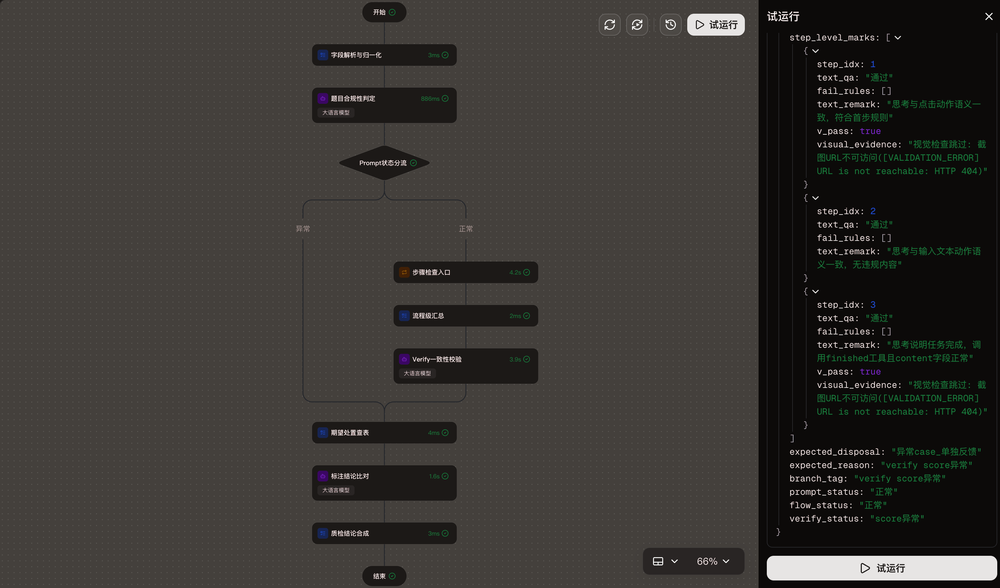
以网页与小程序形态承载知识图谱和问答入口。当前资料能够确认产品形态与公开网页，不能据此推断知识准确率、医疗有效性或生产级质量。
天纪、人纪资料分散，学习后难以快速定位、串联和复习，需要同时解决知识导航与问答入口的问题。
独立设计“知识图谱总览 → 学习路径 → 知识卡片 → AI 问答”核心路径，搭建五层知识架构。
Web 主站、微信小程序、知识图谱可视化、问答页、来源治理与 RAG 路由。
形成 69 个可视化节点、338 条节点关联，校验 0 条悬空关系；审计 231 项资料，生成 4852 个检索块。
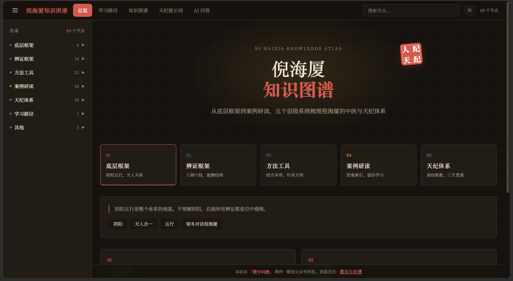
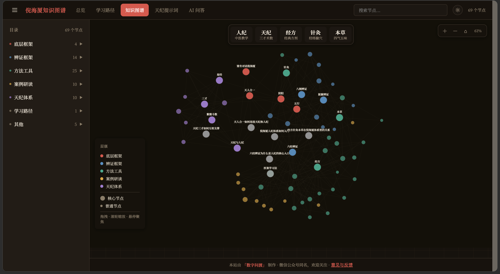
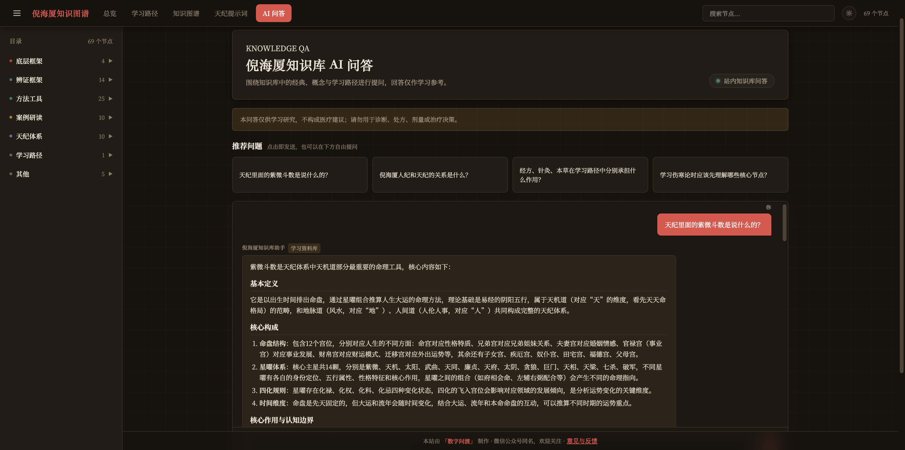
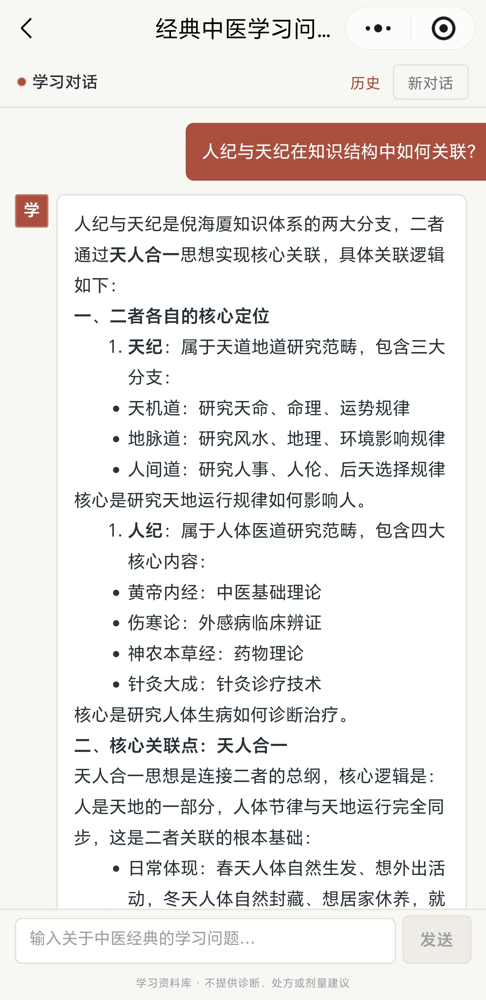
围绕亲子教育、职场发展、自我成长、亲密关系和人生意义五类场景，把阿德勒理论转成角色规则、回答结构和禁用语，再用 SFT-LoRA、离线评测与 Dify 原型验证闭环。
基线模型在特定心理学对话中存在理论堆砌、说教式表达和角色不稳定，需要把抽象原则变成可执行质量标准。
以目的论、课题分离和横向关系定义角色规则、回答结构与禁用语；选择 Doubao-1.5-pro-32k 基座完成两轮 SFT-LoRA。
500 条对话数据、训练任务、五维评测标准、Badcase 迭代记录与 Dify 对话原型。
项目内自建 55 条离线测试集，微调版本逐题胜出 55/55；这是单人、离线、目标场景的方向性验证，不是泛化准确率。
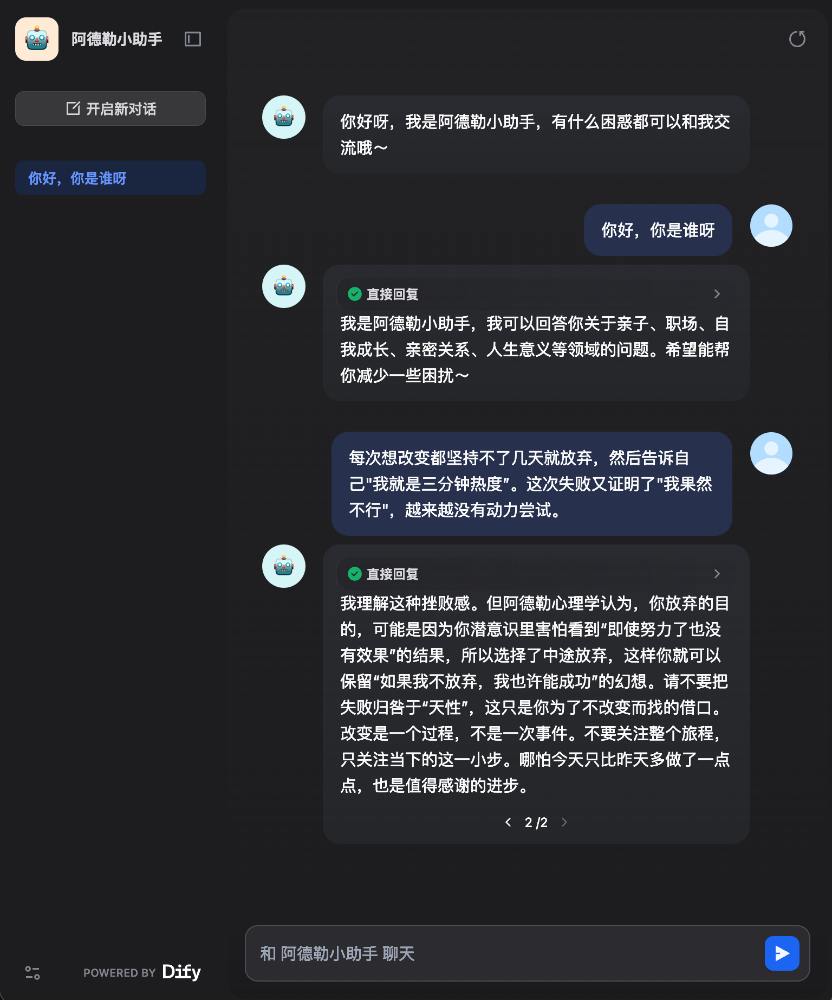
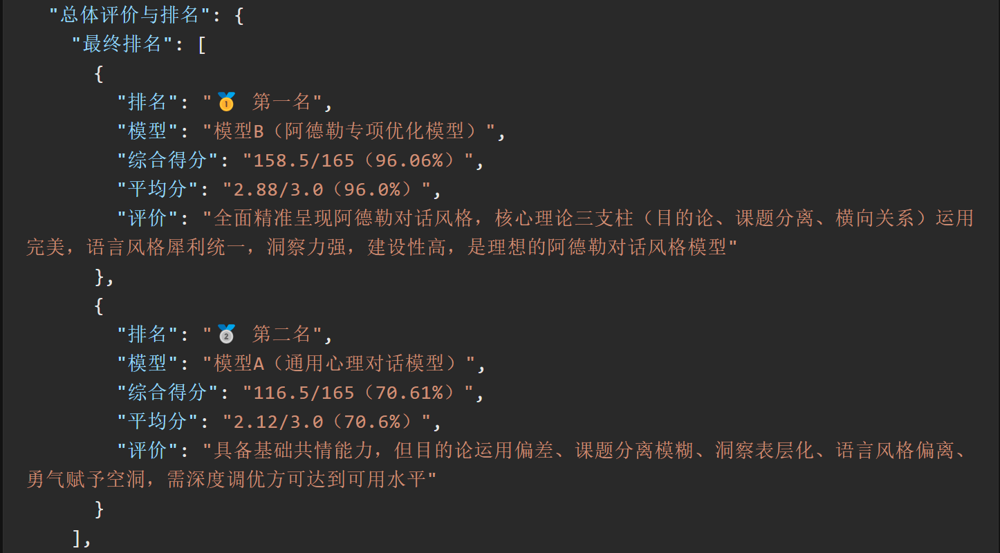
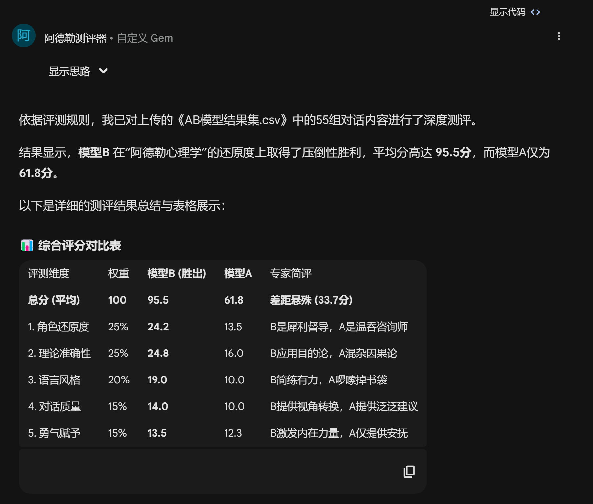
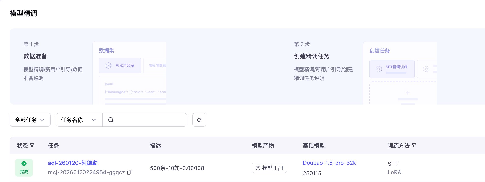
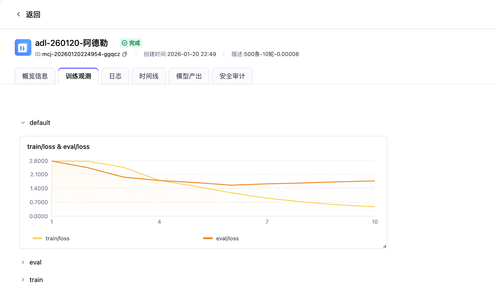
招聘者可按证据状态筛选。事实强度不由页面视觉决定，而由入口类型、验证范围与缺失项共同决定。
这个模块不是“技能关键词”，而是招聘者可用来判断你如何工作的过程信号。
先确定真实场景、决策对象、成功条件与不做什么。
判断 Agent、RAG、工作流或微调是否必要，并明确人工 Gate。
把 PRD、用户流程、原型、Tool/Workflow 结构转成可查看 Artifact。
记录基线、样本范围、失败类型、修复动作和复测方式。
区分可访问入口、Replay、离线验证和待补证据，不把方向性结果包装成生产成功。
这是页面内的交互示例，用来说明五角色链路和人工 Gate 的信息呈现方式；它不是在线模型、真实任务记录或性能证明。
把模糊想法转成用户、场景、目标、约束和待确认问题。只提出会改变方案的问题，并标记仍缺失的事实。
首版只放选题草案，不伪造已发表文章。后续建议每篇都附项目来源、反例和可复查证据。
从任务不确定性、工具权限、人工确认和失败成本四个维度判断。
把离线结果、单人对比、方向性收益与线上业务结果分开表达。
讨论客户现场、系统集成、监控、SLA、培训与运维证据如何补齐。
我更关注怎样把复杂业务问题拆成可验证的产品方案：明确用户与边界，设计流程与原型，推进 Agent / RAG / 自动化工作流，并用评测、Badcase、UAT 和证据包支撑复盘。对于客户现场交付、独立系统集成、生产监控、SLA 与商业结果，网站只展示已有事实，不提前包装成充分经验。